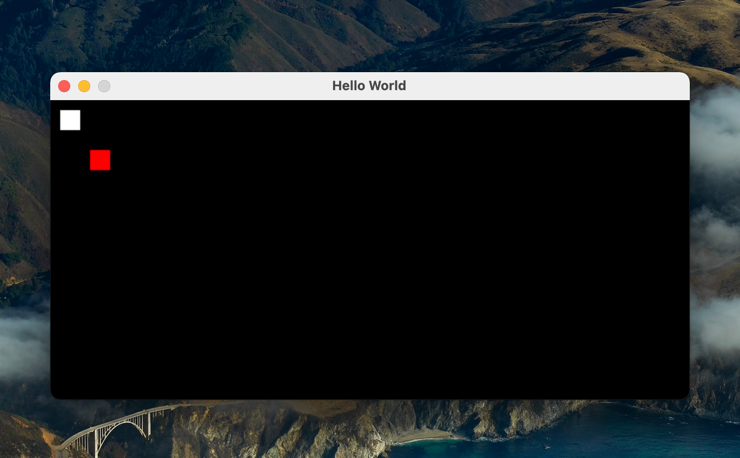

Pygame 简介¶
软件运行模式¶
计算机 CPU 工作本质上是一个无限循环，CPU 按照取指执行(Fetch-Decode-Execute)的工作流运行。操作系统(OS)提供给用户使用的 Shell
也是这样一个无限循环。shell等待用户输入命令，然后解析执行，再处理用户输入的下一条命令，周而复始。
我们日常使用的手机 APP 或者 Web 应用程式，其后端服务也是如此。Server 启动的服务进程，在一个无限循环中，当客户请求(Request)发送过来的时候，处理连接，解析请求，进而返回响应(Response)内容。由此可见，计算机软件工作流是一个抽象的无限循环。
游戏也是一种软件，自然也是一个无限循环，用户操作外设(键盘或者手柄)，然后游戏接收这些事件，处理响应的逻辑，然后再绘制屏幕输出。其伪代码：
while True:
handle_event()
render_display()
Pygame 可以用来开发简单的 2D 游戏。正好可以用来实现 Chip8 的键盘事件和屏幕绘制。
屏幕与像素¶
想要画一幅画，我们需要一张白纸和一支笔，笔将墨水涂抹到纸上，于是就能看见图像。电子屏想要显示一幅画，也需要类似的纸和墨。
电子屏是无数可以发光的点组成，Chip8 的屏幕是黑白两色。当点发白色的光时候，相当于背景是白色的纸，当点发黑光的时候，就是黑色的墨。每一个点通过黑白不同的发光，组合起来就是显示画（呈像）。1
每一个点称之像素(pixel)，屏幕横轴(x)和纵轴(y)组成了一个二维矩阵，称之为分辨率。Chip8 屏幕宽64，高32的分辨率，即64 * 32。2
+---------------------------+
|(0, 0) (63, 0) |
| |
| |
| |
|(0, 31) (63, 31)|
+---------------------------+
x, y 轴的零点在屏幕的左上角，依次向右和向下增长。屏幕上的每一个像素，都可以使用(x, y) 这样的元组进行描述。
canvas¶
画画需要纸，在电子屏上绘画的时候，也可以想象有一张纸存在。通常称之为画布(canvas)。在 canvas 上操作 x、y 轴进行画图，就能呈现图案。下面通过代码了解这一模式：
import pygame
def main():
pygame.init()
pygame.display.set_caption("Hello World")
canvas = pygame.display.set_mode((640, 300))
canvas.fill((0x00, 0x00, 0x00))
pygame.display.update()
while True:
pass
if __name__ == '__main__':
main()
pygame.init 方法进行初始化
设置一个标题
Hello World使用 pygame.display 的 set_mode 方法创建一个 canvas，其参数是窗口的宽和高。(640, 320) 表示宽640，高320的窗口屏幕。
在无限循环中，使用 canvas 的 fill方法 设置画笔颜色，fill 的参数是一个 Color 对象，可以是 rbg三色的元组(0x00, 0x00, 0x00)，也可以是颜色字符串，如
black表示黑色。最后使用 pygame.display.update 方法刷新屏幕
运行上面代码，即可看见一个黑色的窗口，此时窗口什么操作都无法响应。下面增加一下键盘事件。
键盘¶
pygame 封装了所有事件。在主循环中读取事件进行处理。
import sys
import pygame
def main():
pygame.init()
pygame.display.set_caption("Hello World")
canvas = pygame.display.set_mode((640, 300))
canvas.fill((0x00, 0x00, 0x00))
pygame.display.update()
while True:
for event in pygame.event.get():
if event.type == pygame.KEYDOWN or event.type == pygame.KEYUP:
print(f"event.type={event.type} event.key={event.key}")
elif event.type == pygame.QUIT:
pygame.quit()
sys.exit()
pygame.KEYDOWN 和 pygame.KEYUP 分别表示键盘键被按下和按下之后弹起的事件。运行代码之后，可以看到控制台的输出
event.type=768 event.key=115
event.type=769 event.key=115
event.type=768 event.key=102
event.type=769 event.key=102
event.type=768 event.key=113
event.type=769 event.key=113
event.type=768 event.key=101
event.type=769 event.key=101
输出的内容和上面的未必一样，取决于你按下的按键，上面只是一个例子。可以看到 768 和 769 都是成对出现。
当使用鼠标点击窗口的关闭的时候，可以看到程序窗口消失。
绘制矩形¶
下面使用 pygame 绘制一个矩形。其原理也很简单，先设置画笔颜色，然后确定绘制矩形的坐标，然后再设置矩形的宽和高。
import sys
import pygame
def main():
pygame.init()
pygame.display.set_caption("Hello World")
canvas = pygame.display.set_mode((640, 300))
canvas.fill((0x00, 0x00, 0x00))
pygame.display.update()
pygame.draw.rect(
canvas,
(0xff, 0xff, 0xff),
(10, 10, 20, 20), # 在坐标 (10, 10) 绘制 宽高 (20, 20) 的矩形
0
)
pygame.draw.rect(
canvas,
"red",
(40, 50, 20, 20), # 在坐标 (40, 50) 绘制 宽高 (20, 20) 的矩形
0
)
pygame.display.update()
while True:
for event in pygame.event.get():
if event.type == pygame.KEYDOWN or event.type == pygame.KEYUP:
print(f"event.type={event.type} event.key={event.key}")
elif event.type == pygame.QUIT:
pygame.quit()
sys.exit()
pygame.draw.rect 方法可以绘制矩形。参数为 canvas 对象和矩形的属性(坐标和宽高)
运行代码可以看到屏幕
动画¶
动画无非是让图形动起来。所谓的动，就是不同的时候，绘制不一样的图像，改变图形的坐标，就能实现动画效果。
import sys
import time
import pygame
def main():
pygame.init()
pygame.display.set_caption("Hello World")
canvas = pygame.display.set_mode((640, 300))
canvas.fill((0x00, 0x00, 0x00))
pygame.display.update()
while True:
for x in range(0, 100, 10):
# x 的坐标 从 0 增至 100
pygame.draw.rect(
canvas,
(0xff, 0xff, 0xff),
(x, 50, 10, 10),
0
)
pygame.display.update()
time.sleep(0.2)
for event in pygame.event.get():
if event.type == pygame.KEYDOWN or event.type == pygame.KEYUP:
print(f"event.type={event.type} event.key={event.key}")
elif event.type == pygame.QUIT:
pygame.quit()
sys.exit()
主循环的时候，进行矩形绘制，每一次循环绘制一次，即刷新一次屏幕，相当于绘制了一帧图像。
运行上述代码，会看见屏幕的矩形向左复制，之所以是复制，不是移动。原因是矩形绘制下一帧的时候，上一帧的图案并没有从画布消失。解决的方法就是绘制下一帧的时候，把上一帧左边清除。一个简单的方法就是重新填充一下背景色，相当于清除canvas，重新绘制。
while True:
for x in range(0,100, 10):
canvas.fill((0x00, 0x00, 0x00)) # 清楚画布
pygame.draw.rect(
canvas,
(0xff, 0xff, 0xff),
(x, 50, 10, 10),
0
)
pygame.display.update()
time.sleep(0.2)